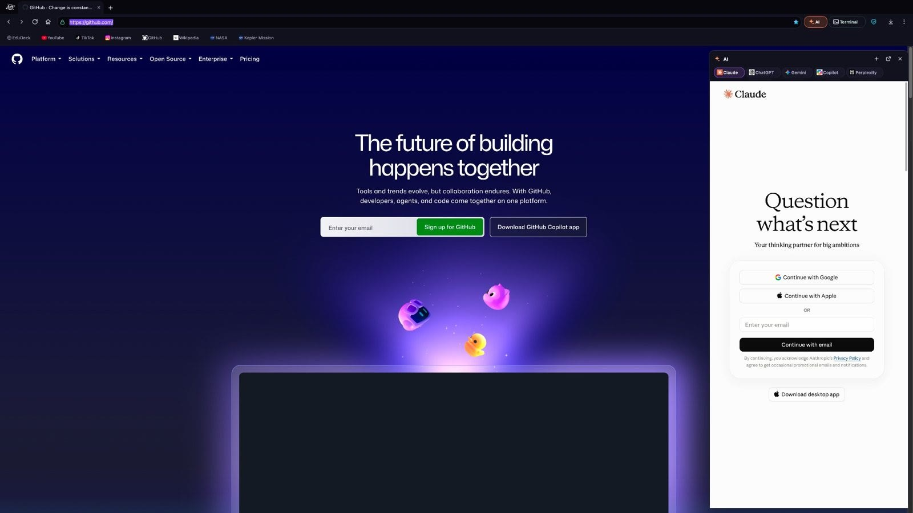
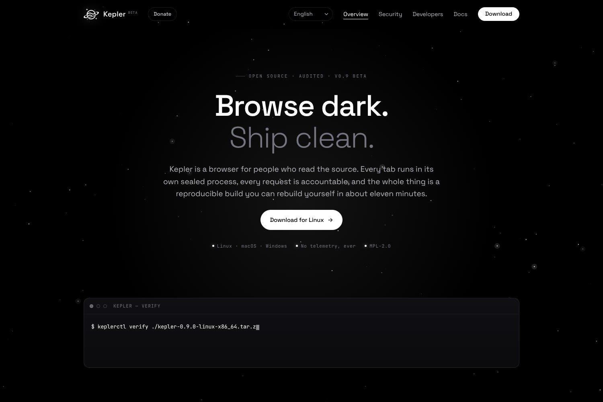
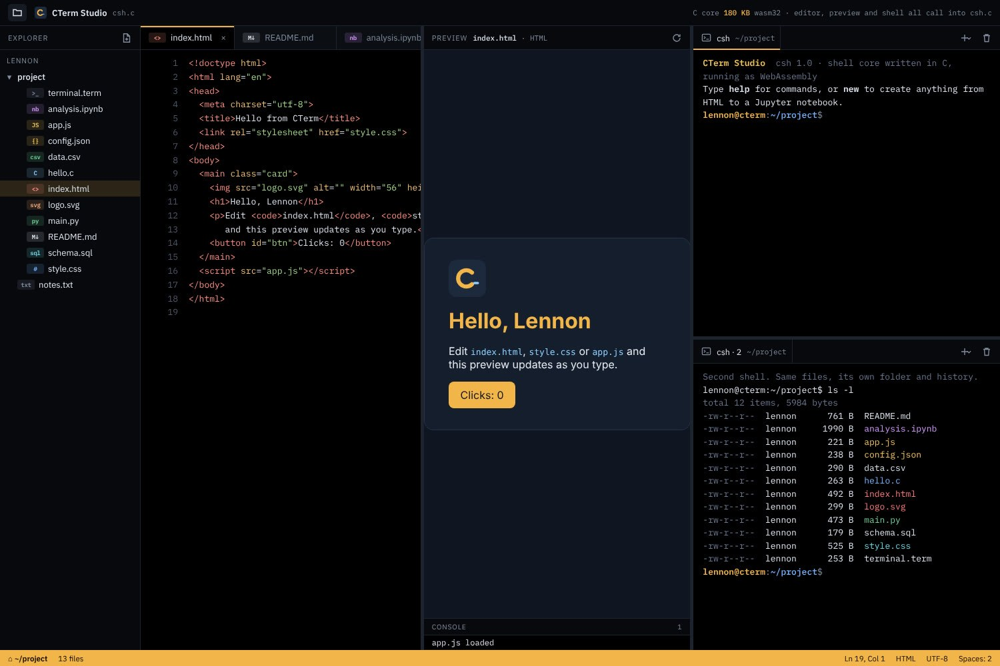
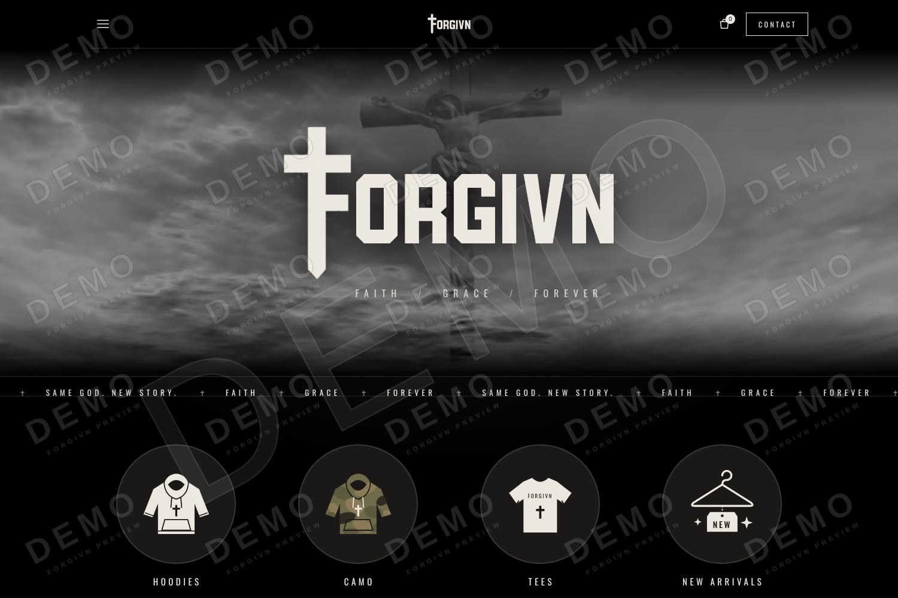

Kepler
A web browser from another orbit, written in C++ on Qt 6 and Chromium: a built-in tracker blocker, private Orbit windows, session restore and an animated new-tab page.
keplerbrowser.org ↗
A web browser from another orbit, written in C++ on Qt 6 and Chromium: a built-in tracker blocker, private Orbit windows, session restore and an animated new-tab page.
keplerbrowser.org ↗
The download and docs site for Kepler, served by a zero-dependency Rust release server with a JSON releases API.
Visit the site ↗
An editor, live preview, file explorer and two shells in one page, all running on a C core compiled to WebAssembly.
GitHub ↗
A clothing storefront in one dependency-free file: a dove intro, filterable products, a saved cart, a contact form and scroll animations.
GitHub ↗Hand-built sites made to fit what you do: the design, the animation and fast, clean code. This site is one of them.
Ask about a website ↗Something broken, slow or acting strange? I track down the cause and fix it, from layout glitches to crashes.
Report a bug ↗Hardware and the code that runs it: circuits, microcontrollers, sensors and lights, planned and built with you.
Plan a build ↗